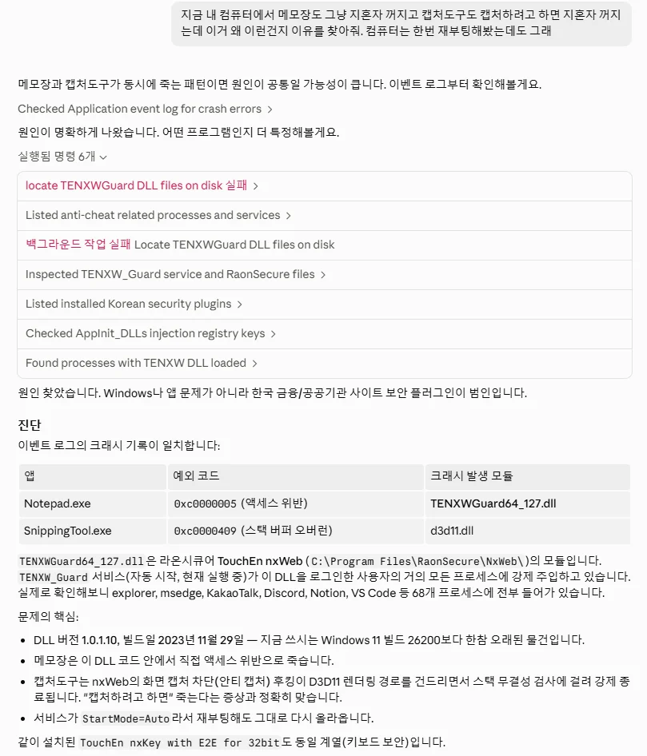
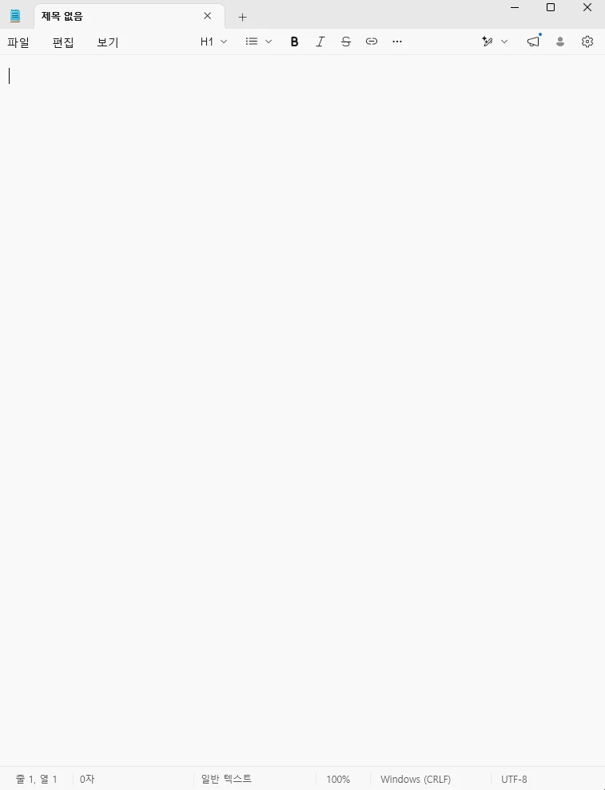

갑자기 캡처도구도 작동 안하고 메모장도 계속 꺼졌는데 이유를 모르겠어서 클로드한테 물어보니까
은행 보안 프로그램 "TouchEn nxWeb" 이 새끼가 원인이라고 함 ㅋㅋㅋㅋㅋ

클로드 권유에 따라서 저 보안프로그램 지우니까 바로 정상 작동함 ㅋㅋㅋㅋㅋㅋㅋㅋㅋ
아... ㅅㅂ... 그저... ㅋㅋㅋ
이 새끼는 그냥 GOAT임...

갑자기 캡처도구도 작동 안하고 메모장도 계속 꺼졌는데 이유를 모르겠어서 클로드한테 물어보니까
은행 보안 프로그램 "TouchEn nxWeb" 이 새끼가 원인이라고 함 ㅋㅋㅋㅋㅋ

클로드 권유에 따라서 저 보안프로그램 지우니까 바로 정상 작동함 ㅋㅋㅋㅋㅋㅋㅋㅋㅋ
아... ㅅㅂ... 그저... ㅋㅋㅋ
이 새끼는 그냥 GOAT임...
그거 쓰지말고 식탁보 프로그램을 써
요즘은 식탁보임?
용도가 다름.
전자는 메인에서 썻다 지우는거고
후자는 가상머신에서 돌리는거고
예전에 써보니까 한번 실행할 때 마다 프로그램 다시깔고 지랄을 해서 넘 느려서 못쓰겠던데
그래서 내가 뭘 할수있는데 ㅋㅋ 뭐? 지워? 응 업무보려면 또 설치해야돼~ 좆같은거
요즘 나도 오픈코드에 무료 모델이나 저렴한 API 연결해서 쓰는데 옛날이면 이벤트로그 뒤져서 찾는게 굉장히 피곤한 일이고 또 PC사용에 익숙한 사람에게도 어려운 일이었음
근데 LLM은 금방 찾아줘서 오픈코드를 바이브 코딩에도 쓰지만 이런 OS 트러블슈팅 용도로 쓰고 있는데 진짜 편함 ㅋㅋ
뻘짓연구소에 스파크 윈도우 랩탑 영상 하나 새로 올라왔던데 거기 보면 PC 스토리지에 쌓인 데이터 폴더별로 정리 해달라고 하면 알아서 정리도 해줌
이런거 보면 앞으로 PC 사용에서 LLM은 이제 필수인거 알수 있더라
ㅇㅇ 나도 코로나 시기때 리눅스/우분투로 로봇 제어하다가 지혼자 OS 뻑간 이후로 안쓰게 됏는데 LLM 넣어서 쓰니까 진짜 존나 편하더라 ㅋㅋㅋㅋ 서브컴은 아예 우분투로 갈아탔음
한번 써보면 옛날처럼 사용자가 한땀한땀 파일 정리하고 프로그램 추적해서 오류 찾는 방법은 원시인과 현대인의 차이만큼 크게 느껴져버림 ㅜㅜ 두번다시 과거로 돌아가지 못하는듯요
업무상 필요한 장비들 메뉴얼, 설비 인수인계자료, 각종 이슈 보고서같은 거
같은 대분류 폴더에 두고
보수할때 막히는거 물어보면 다 검색해서 해결법 알려주더라
ㅇㅇ...없이 못 살아 이젠
요약 정리 능력이 넘사벽임
이거 예전에 한창 유명했던정보인데 zz
폰으로 하는게 편함 아니면 금융제물용 컴 따로쓰셈
진짜 한국 은행 보안시스템 왜 저따구로 만들어놨는지 모르겠음
'내책임 아님 니책임임'
보안 마피아
우리 지점에 경호원을 두는 대신에 저희 경호원을 고객님께 붙여드릴게요
월급도 당신이 주고, 당신 집에서 재우고, 보안이 뚫려도 고객님 책임입니다
예전에 게임할때 갑자기 느려지길래 뭐가 문젠가 봤더니 저거였던 기억이
구라제거기돌리고 식탁보라고 샌드박스형프로그램있음
이거 적을랬는데
이미 있네 ㅋㅋㅋ
진짜 좋은듯
식탁보는 처음 알았네 굿
ㅇㄷ
인터넷뱅킹 앱 꿀팁 ㅇㄷ
정부랑 은행 별로 보안프로그램 다 따로 있는게 ㄹㅇ ㅈㄹ맞음
은행 어플도
우리은행 어플 깔았는데 카드 사용내역은 확인가능한데, 대금 납부하려면 우리'카드' 어플을 깔아야 한다고 해서
뚝배기 깨버리고 싶더라 ㄹㅇ. 심지어 어플 설치하고 인증서 연동안되서 인증서부터 새로 발급받아야 함
대부분 은행은 카드어플이 따로있음
신한은행은 굳이 카드 어플 안깔아도 은행어플에서 처리되던데
통합하면 또 찐빠남. ㅋㅋㅋ 그래서 분리했다 통합했다 맨날 이 ㅈㄹ.
우리랑 신한이 대표적.
카드사와 은행사가 또 별개회사니까
그것도 존나 참고 이해해준다도 해도
KB는 기업용 뱅킹앱 로그인하려면
KB 개인뱅킹 앱 다운받아서 인증서 인식하고
다시 기업용앱으로 돌아와야됨 ㅋㅋㅋㅋㅋ
진짜 뭐하는 짓인지 모르겠음 ㅋㅋㅋㅋㅋ
이거 ai 내 컴퓨터정보 서버로 올림??
ㅇㅇ
구라제거 주기적으로 돌려줘야됨
구라제거기 돌려야쥬
클로드는 무료도 ㄱㅊ음?
옛날 찍은 사진들 짬통처럼 한곳에 박아놓은거 날짜별 장소별로 분류해달라고 했더니 착착 해주는데 기분 째짐
여러장 찍은것중에 판단해서 제일 깨끗하게 나온것만 남기고 나머지는 짬통 폴더로 보내라고 했더니 그것도 잘해줌
터치앤키 저새끼 찍으면 일단 pc문제의 절반이상은 해결된다.
자꾸 인강프로그램이 멈춰서 codex한테 원인 찾아달라니깐 은행 보안프로그램 삭제후 남은 찌거기가 원인이더라
찌거기 지우니 한번도 오류 안남 ㅋㅋㅋㅋㅋ
은행, 홈택스같은 애미 뒈진 악성 프로그램 설치를 강요하는 사이트에 접속할 일이 있으면... 식탁보 써라
터치엔 저거 캡쳐도구 존나 끄더라
아 요즘 터치앤키 설치하면 크롬이나 엣지에서 복사하면 전체종료 되더라. 대체 어떻게 만든지 모르겠음.
구라제거기 고트
정부나 은행 업부보고나면 구라제거기는 필수임